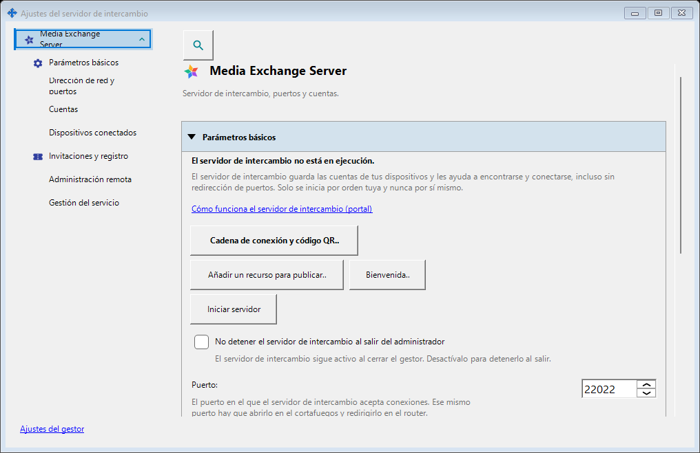
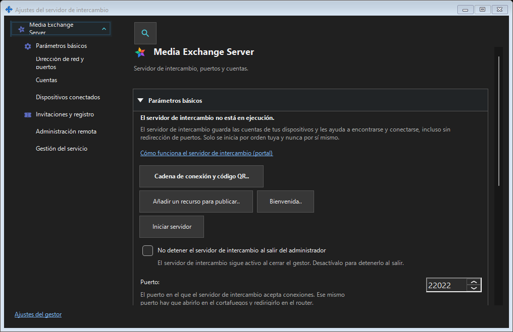

Ajustes del servidor de intercambio
Para qué sirve
SFTP: puerto, límite de conexiones, red local y servicio Windows. Servidor de intercambio: dirección, TLS, cuentas, dispositivos, invitaciones, servicio, registros y administración remota.


En este orden
Abra desde la bandeja o los enlaces de componentes. Abrir y cerrar no inicia ni detiene servidores. El acceso remoto no requiere un servidor local.
Los elementos
Ajustes del servidor de intercambio
SFTP: puerto, límite de conexiones, red local y servicio Windows. Servidor de intercambio: dirección, TLS, cuentas, dispositivos, invitaciones, servicio, registros y administración remota. Abra desde la bandeja o los enlaces de componentes. Abrir y cerrar no inicia ni detiene servidores. El acceso remoto no requiere un servidor local.
Ajustes del gestor · Ajustes de uso compartido SFTP · Ajustes del servidor de intercambio